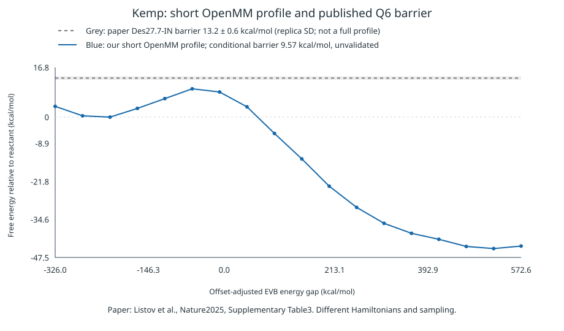

Molecular dynamics (MD)
MD moves atoms through time. Ordinary classical MD keeps bonds fixed, so it cannot describe bond breaking by itself.
MD moves atoms through time. Ordinary classical MD keeps bonds fixed, so it cannot describe bond breaking by itself.
Quantum mechanics describes the reacting atoms; a classical model describes the rest of the enzyme and solvent. It can describe bond changes, but costs more to run.
EVB couples classical force-field descriptions of reactant and product. With sampling, it follows bond changes efficiently; its parameters need suitable reference data.
In this workshop: the paper uses Q6 to run EVB. The short example uses OpenMM with EVBOpenMM. Both run EVB, with different setup and sampling.
The example is the Kemp reaction studied in the paper. The substrate is the molecule the enzyme acts on. Asp162, part of the enzyme, accepts a proton (a hydrogen nucleus) from it. As the C–H bond breaks, a bond in the substrate's small ring breaks too, opening the ring and forming the products.

Substrate carbon that initially bears Ht. In the product it is part of the new nitrile group.
The transferable hydrogen (proton) that moves from C3 to Asp162.
O1 and N2 are the oxygen and nitrogen in the substrate ring. Their N2–O1 bond breaks as the ring opens.
Asp162 means the enzyme's aspartate residue at position 162. OD1 is one of the two oxygen atoms in its side-chain carboxylate. It accepts Ht and becomes protonated in the product state. These labels identify atoms in the reaction scheme; they are not EVB parameters.
The substrate still holds the proton. Asp162 is ready to accept it.
Asp162 now holds the proton, and the substrate has the ring-opened product structure.
This workshop treats proton transfer and ring opening as linked changes between the reactant and product descriptions. The exercise does not add a separately simulated intermediate.
The drawing labels are C3=CH (PDB4002), Ht=HT (4014), O1=OR (4005) and N2=NR (4006). Scheme labels and native atom names refer to the same mapped particles.
First, follow the atomsThe labels below are checked against the Des27.7-IN structure and the numerical FEP atom map. The substrate is SUB257, and the catalytic residue is ASP162. A few comments in the archived FEP files use older residue numbers or Glu-like atom labels. For this workshop, use the atom map and the ASP162 names shown here.
CH–HT and OR–NR are bonded. Asp162 is a carboxylate: OD1 is the model's proton acceptor. The substrate is neutral and Asp carries formal charge −1.
Asp OD1 accepts HT as the CH–HT bond breaks. Electron redistribution increases CH–NR bond order toward a nitrile while the NR–OR bond breaks and negative charge develops on OR. These are coupled changes in the two-state model, not a sequence of separately simulated intermediates.
OD1–HT is bonded; CH–HT and OR–NR are absent. CH–NR has nitrile-like parameters. OR stays attached to the aromatic framework as phenoxide. Asp is neutral; the substrate product has formal charge −1, so total reactive charge remains −1.
| Atom pair (PDB serials) | Reactant → product |
|---|---|
| CH–HT (4002–4014) | Bond present → absent: C–H cleavage. |
| OR–NR (4005–4006) | Bond present → absent: N–O ring opening. |
| OD1–HT (2526–4014) | Bond absent → present: Asp O–H formation. |
| CH–NR (4002–4006) | Bond retained with changed force constant / equilibrium distance: 1.320 → 1.157 Å (model parameters, not measured trajectory distances). |
| CH–CB2; CG–OD1; CG–OD2 | Bond parameters change with conjugation and Asp protonation. Angles, torsions, impropers, charges, types and exclusions also change. |
EVB does not track individual electrons. It combines the reactant and product energy descriptions as the atoms move. This two-state model does not include a separate carbanion intermediate; the changing product-state contribution is a mathematical mixture, not a new chemical species.
Q index is a local reactive-region index; PDB serial is the global atom identifier. Neither is a residue number. Atom names such as CH and CA are distinct from force-field type labels such as sub_CA or pro_CA. OpenMM array indices are zero-based; the source serial mapping is one-based.
| Q index | PDB serial | Actual identity | Chemical role |
|---|---|---|---|
| 1 | 4002 | SUB257.CH | Substrate carbon bearing HT; becomes the nitrile carbon. CH is one atom name, not a carbon–hydrogen pair. |
| 2 | 4003 | SUB257.CB2 | Aromatic framework carbon bonded to CH; its bond parameters to CH change. |
| 3 | 4004 | SUB257.CA | Aromatic framework carbon bonded to the ring oxygen OR. |
| 4 | 4005 | SUB257.OR | Heterocycle oxygen; loses its bond to NR and remains attached to the aromatic ring as phenoxide oxygen. |
| 5 | 4006 | SUB257.NR | Heterocycle nitrogen; remains bonded to CH and becomes the nitrile nitrogen. |
| 6 | 4007 | SUB257.CB1 | Aromatic framework carbon. |
| 7 | 4008 | SUB257.CC1 | Aromatic framework carbon. |
| 8 | 4009 | SUB257.CZ | Aromatic framework carbon. |
| 9 | 4010 | SUB257.CC2 | Aromatic framework carbon. |
| 10 | 4011 | SUB257.NO | Nitro-group nitrogen; distinct from the reactive ring nitrogen NR. |
| 11 | 4012 | SUB257.ON1 | Nitro-group oxygen; distinct from the ring oxygen OR. |
| 12 | 4013 | SUB257.ON2 | Second nitro-group oxygen. |
| 13 | 4014 | SUB257.HT | Transferred hydrogen: moves from CH to Asp162 OD1. |
| 14 | 4015 | SUB257.HB1 | Non-transferred substrate ring hydrogen. |
| 15 | 4016 | SUB257.HC1 | Non-transferred substrate ring hydrogen. |
| 16 | 4017 | SUB257.HC2 | Non-transferred substrate ring hydrogen. |
| 17 | 2522 | ASP162.CB | Asp side-chain beta carbon. |
| 18 | 2523 | ASP162.HB2 | Asp beta-carbon hydrogen. |
| 19 | 2524 | ASP162.HB3 | Second Asp beta-carbon hydrogen. |
| 20 | 2525 | ASP162.CG | Asp carboxyl carbon; remains bonded to both oxygens. |
| 21 | 2526 | ASP162.OD1 | Asp carboxylate oxygen accepting HT; becomes the hydroxyl oxygen. |
| 22 | 2527 | ASP162.OD2 | Other Asp carboxylate oxygen; acquires carbonyl-like product parameters. |
Track r(CH–HT), r(OD1–HT), r(OR–NR) and r(CH–NR). A useful geometric proton-transfer coordinate is r(CH–HT) − r(OD1–HT): negative favours donor attachment, positive acceptor attachment. It is a different coordinate from the energy-gap axis. A short mapping trajectory or a binned energy-gap maximum alone does not establish the molecular transition state.
At each arrangement of atoms, EVB evaluates a reactant description and a product description, then combines them into one energy. This lets the model represent bonds changing.
The diagonal boxes hold reactant and product energies. The other two boxes contain the coupling between them.
α shifts the product energy. H₁₂ controls how strongly the descriptions mix. Neither is the reaction barrier.
| Reactant description | Product description | |
|---|---|---|
| Reactant | Reactant energy | Mixing strength H₁₂ |
| Product | Mixing strength H₁₂ | Product energy + α |
The computer combines these entries and uses the lower mixed energy for that arrangement of atoms.
H(x) = [[VR(x), H12], [H12, VP(x) + α]]. The lower eigenvalue is the EVB energy at that geometry. A free-energy profile requires sampling; the matrix alone is not a barrier.
The paper reports Q6 activation-barrier estimates for enzyme variants. Figure 3e is not a full free-energy curve. Des27.7-IN is reported at 13.2 ± 0.6 kcal/mol.
Paper and supporting informationThe saved 21-window profile is from a short adapted run. Its 9.57 kcal/mol peak is not validated.
Open the saved profileSystem boundaries, electrostatics, parameter conventions, and sampling differ. These examples are not a direct comparison of software engines.
All saved activities open in your browser. No setup is needed.
Find the proton donor, acceptor, and bonds that change.
Open the reaction schemeMove α and H₁₂ one at a time and see how the energy changes.
Open the EVB viewerSee what the Q6 paper reports and what the short OpenMM example shows.
Open the comparisonInstall Git and Conda or Miniforge. From a terminal:
git clone https://github.com/ND7996/Kemp-EVB-Workshop.git cd Kemp-EVB-Workshop conda env create -f kemp_evb/calculation/environment.yml conda activate kemp-short python kemp_evb/calculation/scripts/run_short_evb_demo.py --check python kemp_evb/calculation/scripts/run_short_evb_demo.py
The run uses a CPU and saves a browser plot plus JSON summary under kemp_evb/calculation/runs/. Open the HTML file in a browser.
This five-atom example follows a prescribed geometry path. It checks the OpenMM/EVBOpenMM software connection; it is not MD or a free-energy calculation. Its settings are for teaching, not fitted parameters.
The browser activities use saved examples. A full calculation has three separate stages. Each stage checks something different before you move on.
Start from the Kemp enzyme and substrate. Make reactant and product descriptions with the same atoms and atom order. Assign each state's bonds, charges, force-field terms, and EVB settings; check the mapping, total charge, proton position, solvent, and ions.
Minimize and equilibrate R and P separately. Check for clashes and unstable geometry, then confirm the energy and temperature behave sensibly. This prepares the endpoints; it does not calculate the reaction barrier.
Map between the R and P energy descriptions through lambda windows. Sample every window, check overlap and convergence, and compare independent replicas. Analyze the energies to estimate the profile, activation barrier, and reaction free energy.
The files in this workshop include a saved short Kemp dataset for learning the analysis. They do not include the complete live R/P preparation, endpoint-relaxation, and FEP run scripts. The viewers therefore do not launch those three simulation stages.
General recipe versus this implementation: independent endpoint relaxation is a useful general preparation route. The current full-enzyme OpenMM driver specifically relaxes λR=1, heats/equilibrates there, then traverses mapping windows. It must not be described as having independently relaxed both endpoints.
Original preparation: the Zenodo README states that starting structures were minimized with Amber22 before Q6 preparation. The archive includes min1.in, min2.in and min3.in plus the already prepared Q6 PDB/topology/FEP files. Our import starts from those supplied Q-ready structures; it does not rerun the authors’ complete Amber preparation.
The native Q input archive supplies the starting chemistry. The OpenMM path imports it and then runs a separate, shorter workflow. These stages are not a claim that the two Hamiltonians or sampling lengths are equivalent.
| Stage | Published Q6 route / supplied inputs | This OpenMM adaptation |
|---|---|---|
| 1 · Prepare | Native topology, PDB coordinates, OPLS-AA/TIP3P parameters and a Q FEP definition describe the enzyme/solvent and two reactive states. | Parse Des27.7-IN topology, coordinates and FEP changes. Preserve atom order; build R/P state systems for 6,330 particles and map the 22 reactive atoms. Convert units, LJ coefficients and Morse conventions. Normalize residue naming for OpenMM without changing particle identity. |
| 2 · Define the FEP model | The .fep file lists Q atoms, state-dependent charges, bonds, angles, torsions, impropers and exclusions. It is a model definition, not an energy trajectory. | Apply those changes to two prebuilt state systems; register reactive Morse terms and the atom mapping in EVBOpenMM. Verify detected forming/breaking pairs against the source. Use λRVR+(1−λR)VP for mapping sampling. |
| 3 · Relax | Supplied Q templates labelled minimization/relaxation use restrained dynamics as well as the preceding Amber minimization. Nonempty water-relaxation input specifies MD steps and restraints; a filename containing “min” is not proof of a gradient minimizer. Staged warming and equilibration follow. Some archive templates are empty; a complete executable native sequence is not claimed here. | Hold the reactant mapping state (λR=1). Use bounded force-descent steps with line search, then optional limited L-BFGS minimization. Record energy/force diagnostics. The short config allows 200 descent iterations, 200 L-BFGS iterations and 0.0005 nm maximum descent displacement. |
| 4 · Heat and equilibrate | Published protocol: 30 ns equilibration per replica, before the production mapping calculations. Consult the SI for the original setup. | Short example: 50 → 150 → 300 K, 200 steps per temperature, then 1,000 steps at 300 K. Langevin dynamics uses a 0.25 fs timestep and friction 1 ps⁻¹. This is an engineering trial, not equivalent to 30 ns equilibration. |
| 5 · Sample windows | Qdyn mapping dynamics: 51 windows × 200 ps, with 30 independent replicas per case. Native .en files contain energies for QFEP analysis. | Short example: one seed (101), 21 windows from λR=1 to 0; each has 200 equilibration and 1,000 production steps. Record both state energies every 20 production steps (50 samples/window). Save DCD, energy traces and restart/checkpoint data. |
| 6 · Reconstruct | QFEP connects window free energies and evaluates the EVB profile using coupling/offset parameters, binning and reweighting. | Connect windows with forward/reverse FEP diagnostics. Mix EVB energies per frame before exponential bin averaging and cumulative window normalization. Inspect overlap and missing bins; a smooth plot alone does not establish convergence. |
Kemp_EVB/scripts/full_enzyme.py builds the imported states. full_workflow.py handles relaxation, heating, mapping and checkpoints. source_profile.py reconstructs the source-parameter profile.
Edit Kemp_EVB/configs/full_enzyme_short.json: equilibration_steps, window_equilibration_steps, production_steps_per_window, lambda_schedule, sample_interval and seed. Use a new run directory for a changed configuration. Increasing length does not automatically validate the model.

Download the slides (PDF) · Optional detailed worksheet · Linux setup for live calculations
Paper: Listov et al., “Complete computational design of high-efficiency Kemp elimination enzymes,” Nature (2025). Open the paper · Deposited simulation inputs.